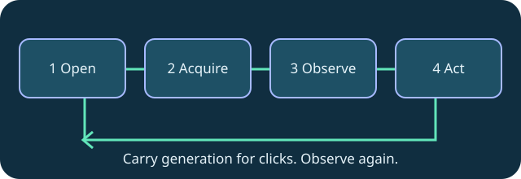

workflow-checklist
An observation checklist for desktop agents: workflow checklist
Open a session, acquire control, observe and preserve the screen generation before input.
Open a session, acquire control, observe and preserve the screen generation before input.
Before the session, pick the remote service and confirm the authorized host profile. During the session, keep the observation surface matched to the work.
Use one long-lived MCP peer for the task. Discover a saved host, open it with perceive enabled, acquire its control lease, read the screen and act. Carry the returned screen generation into coordinates. Values shown here are placeholders, not IDs or geometry from your machine.
After the session, close the connection and keep a source-linked note of the workflow that helped. Read the upstream guide for setup specific to your platform.

Technical reference: DeskVNC upstream documentation. Reviewed against the saved AGENT-SKILL.md snapshot.